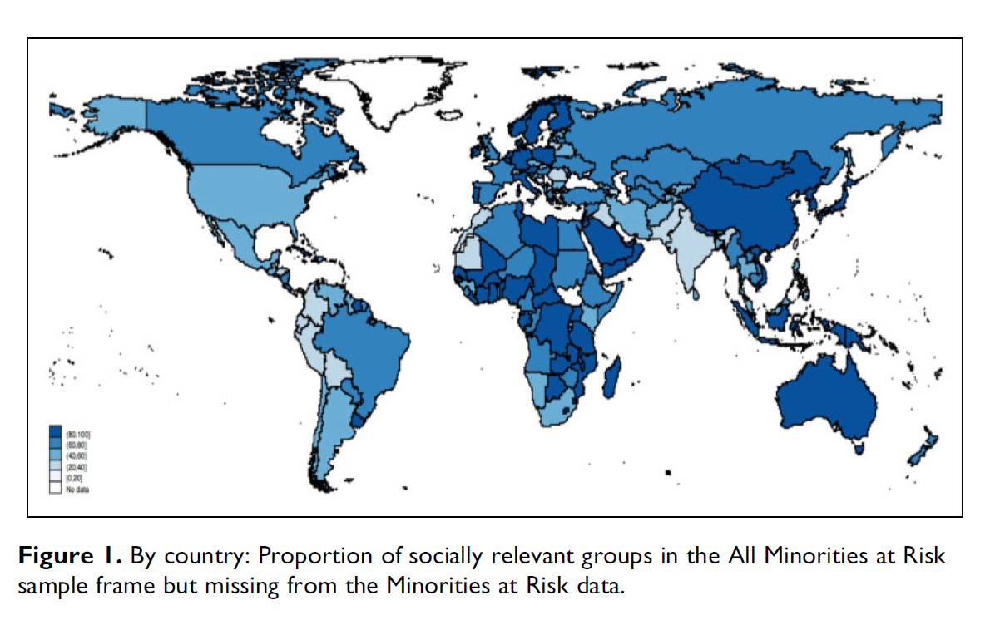

Amar
The All Minorities at Risk (AMAR) project is a university-based research project that monitors and analyzes the status and conflicts of politically-active communal groups in countries with a current population of at least 500,000. The project is designed to provide information in a standardized format that aids comparative research and contributes to the understanding of conflicts involving relevant groups.
The project was founded in 1986 as the Minorities at Risk (MAR) data by Ted Robert Gurr, one of the preeminent scholars of political violence and ethnic conflict. Since 1988, the Center for International Development and Conflict Management (CIDCM) at the University of Maryland has hosted the project. The MAR Project has been led by Ted Robert Gurr (1986-2004), Christian Davenport (2004-2006), and Jonathan Wilkenfeld (2007-2010). The AMAR project is led by Jóhanna Birnir (2010-present). The MAR and AMAR project have been funded by various agencies, including the Carnegie Corporation, the Hewlett Foundation, the National Consortium for the Study of Terrorism and Responses to Terrorism (START), the National Science Foundation, the State Failure (now Political Instability) Task Force, the United States Institute of Peace, the U.S. Department of Homeland Security, and the Department of Government and Politics at the University of Maryland.
Publications

Introducing the AMAR (All Minorities at Risk) Data